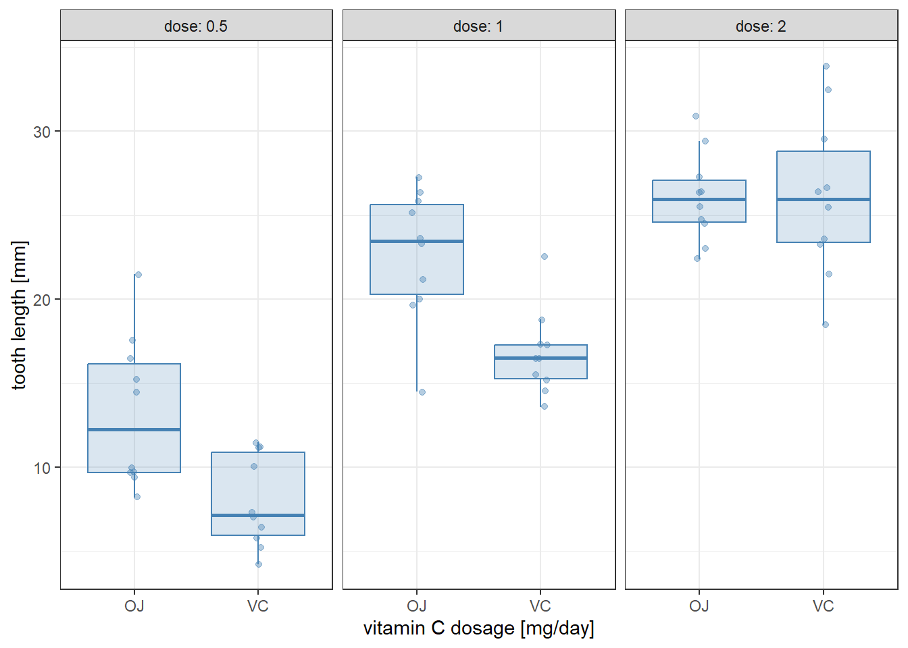
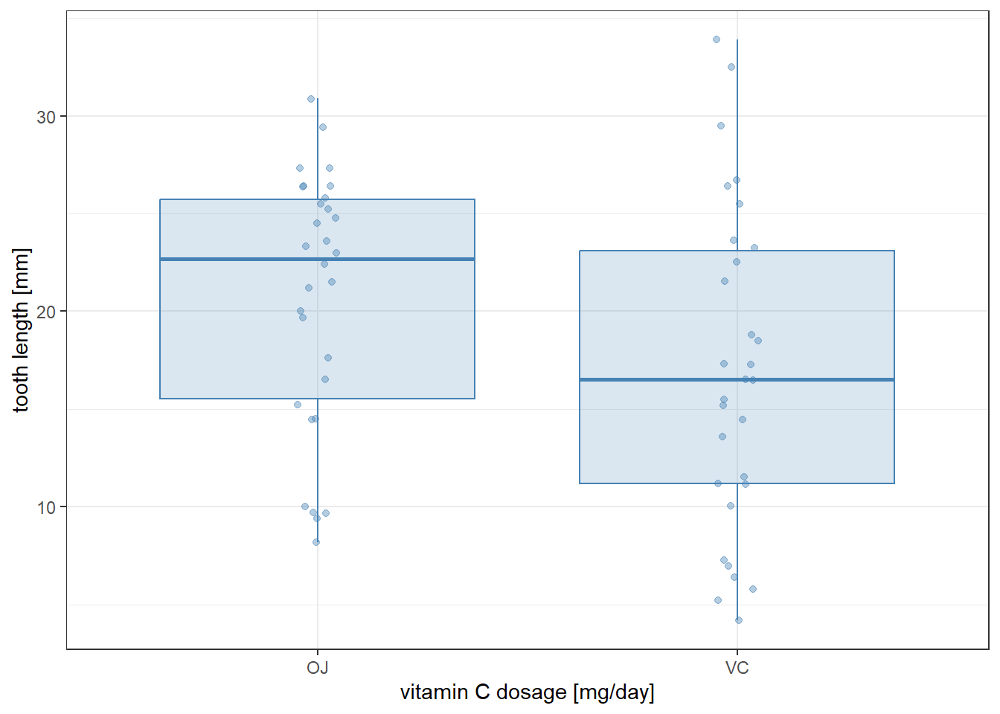
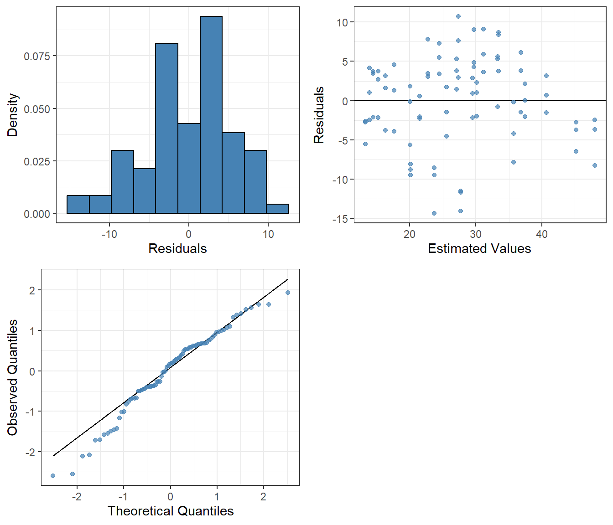
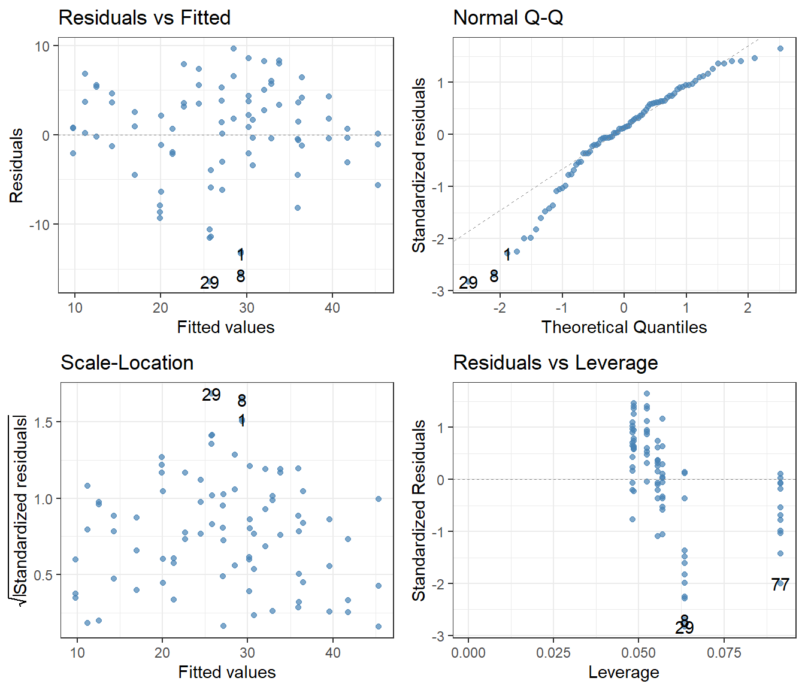
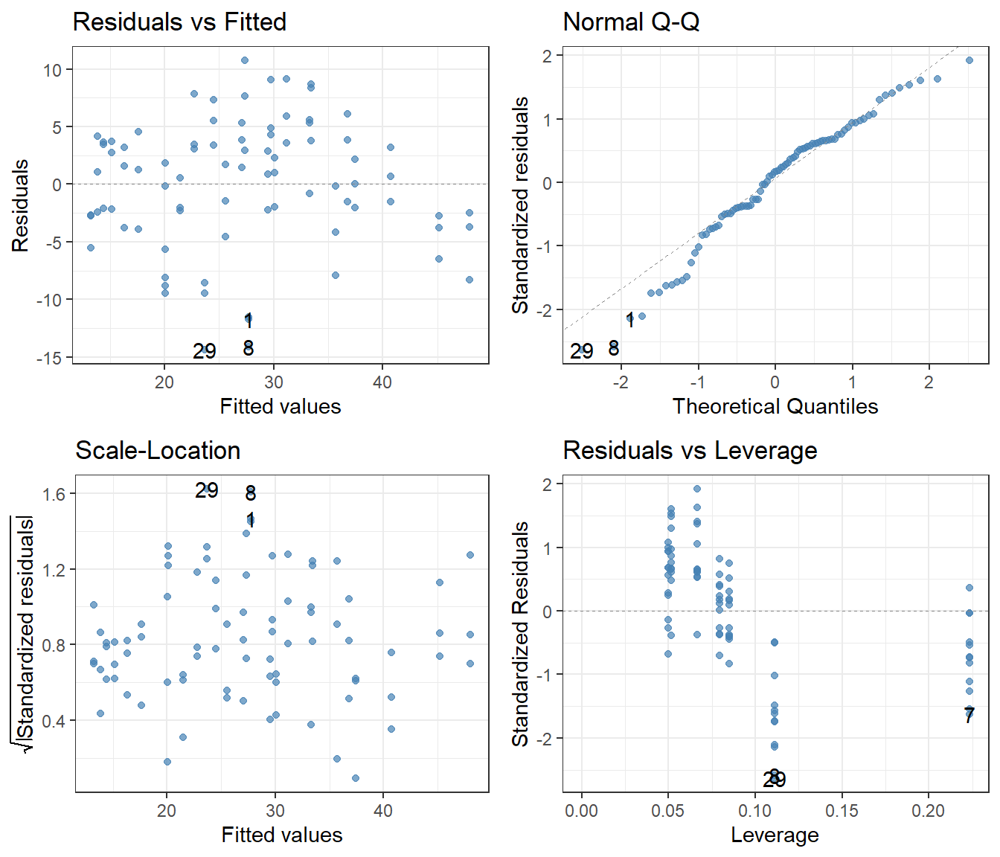

Chapter 19 discussed techniques for analyzing data which fall into multiple categories, but those categories are levels of a single factor. Here we go further and work with data classified by two independent factors.
A good example is provided by the built-in dataset ToothGrowth, which contains data on the tooth growth of Guinea pigs in response to receiving vitamin C.
As seen, there are three dosage levels (0.5, 1, and 2) and two types of supplement (VC for vitamin C in the form of raw ascorbic acid, and OJ for orange juice). As usual, we first visualize the data. In doing so, it is useful to convert dose to a factor (Section 8.5): the three dosage levels play the role of a categorical variable (“low”, “medium” ,and “high” levels of vitamin C dosage), and we are not so interested in the actual magnitudes of those dosages.
as_tibble(ToothGrowth) |>mutate(dose =as_factor(dose)) |>ggplot(aes(x = supp, y = len)) +geom_boxplot(alpha =0.2, outlier.shape =NA,color ="steelblue", fill ="steelblue") +geom_jitter(alpha =0.4, width =0.05, color ="steelblue") +labs(x ="vitamin C dosage [mg/day]", y ="tooth length [mm]") +facet_grid(. ~ dose, labeller = label_both) +theme_bw()

Intuitively, we would expect there to be an effect of dosage, because the higher the dosage the longer the teeth become. We would also expect an effect of supplement type, because orange juice seems to perform better (at least no worse) than raw ascorbic acid in facilitating tooth growth. Continuing with the linear models from Chapter 19, it is easy to include two factors:
Analysis of Variance Table
Response: len
Df Sum Sq Mean Sq F value Pr(>F)
dose 2 2426.43 1213.22 82.811 < 2.2e-16 ***
supp 1 205.35 205.35 14.017 0.0004293 ***
Residuals 56 820.43 14.65
---
Signif. codes: 0 '***' 0.001 '**' 0.01 '*' 0.05 '.' 0.1 ' ' 1
The new feature above is the inclusion of dose + supp as the predictor, instead of just a single one. Mathematically, this translates to the following model: \[
\begin{split}
(\text{length})_i &
= \beta_0
+ \beta_1 \cdot (\text{dose is 1})_i
+ \beta_2 \cdot (\text{dose is 2})_i \\ &
+ \beta_3 \cdot (\text{supplement is VC})_i
+ \varepsilon_i
\end{split}
\tag{20.1}\] where the coefficients \(\beta_1\), \(\beta_2\), and \(\beta_3\) are all multiplied by indicator variables which take on the value 1 if a data point belongs in that category and 0 otherwise. As seen from the ANOVA table above, both dosage and supplement type appear to have a real effect on tooth growth.
However, this model ignores something that might be potentially relevant: the interaction between the two factors. This means that the nature of the relationship between tooth length and one of the predictors depends on the value of the other predictor. For the Guinea pig data, a case can be made based on the plot above that the effect of the supplement type depends on dosage: when the dosage level is either 0.5 or 1 mg/day, orange juice leads to longer teeth than ascorbic acid—but this benefit disappears at the highest dosage level of 2 mg/day.
Accounting for interaction terms in a statistical model is easy. All one needs to do is add one more term to the formula, denoted dose:supp:
Analysis of Variance Table
Response: len
Df Sum Sq Mean Sq F value Pr(>F)
dose 2 2426.43 1213.22 92.000 < 2.2e-16 ***
supp 1 205.35 205.35 15.572 0.0002312 ***
dose:supp 2 108.32 54.16 4.107 0.0218603 *
Residuals 54 712.11 13.19
---
Signif. codes: 0 '***' 0.001 '**' 0.01 '*' 0.05 '.' 0.1 ' ' 1
The model result confirms that our intuition was likely correct: there does appear to be a real interaction effect between the two factors. Mathematically, the model reads \[
\begin{split}
(\text{length})_i &
= \beta_0
+ \beta_1 \cdot (\text{dose is 1})_i
+ \beta_2 \cdot (\text{dose is 2})_i
+ \beta_3 \cdot (\text{supplement is VC})_i \\ &
+ \beta_4 \cdot (\text{dose is 1})_i \cdot(\text{supplement is VC})_i \\ &
+ \beta_5 \cdot (\text{dose is 2})_i \cdot(\text{supplement is VC})_i
+ \varepsilon_i
\end{split}
\tag{20.2}\] where \(\beta_4\) and \(\beta_5\) are multiplied by products of indicator variables. In other words, the \(\beta_4\) term only shows up in the equation if data point \(i\) both has a dose of 1 mg/day and a supplement of VC, and \(\beta_5\) only appears if data point \(i\) has a 2 mg/day dose and VC supplement.
The inclusion of two factors with their interaction is so common in linear models that there is a shorthand notation to make it easier. Writing dose * supp is exactly the same as the above dose + supp + dose:supp. Let us see this in action:
Analysis of Variance Table
Response: len
Df Sum Sq Mean Sq F value Pr(>F)
dose 2 2426.43 1213.22 92.000 < 2.2e-16 ***
supp 1 205.35 205.35 15.572 0.0002312 ***
dose:supp 2 108.32 54.16 4.107 0.0218603 *
Residuals 54 712.11 13.19
---
Signif. codes: 0 '***' 0.001 '**' 0.01 '*' 0.05 '.' 0.1 ' ' 1
The result is identical to what we had before.
As in the case of one-way ANOVA, diagnostic plots and post-hoc testing (Tukey test) are useful tools. The diagnostic plots look excellent, so we can be confident about interpreting the p-values and other statistics of the linear model correctly:
(Again, due to how TukeyHSD is designed, the aov function must be called before one can use it on a linear model fit.) Here we first have a comparison between the dosage levels, averaging over supplement type. Even after this averaging there is a clear difference between the effects of each dosage level, as can be suspected based on a plot which ignores the supp factor:
as_tibble(ToothGrowth) |>mutate(dose =as_factor(dose)) |>ggplot(aes(x = dose, y = len)) +geom_boxplot(alpha =0.2, outlier.shape =NA,color ="steelblue", fill ="steelblue") +geom_jitter(alpha =0.4, width =0.05, color ="steelblue") +labs(x ="vitamin C dosage [mg/day]", y ="tooth length [mm]") +theme_bw()

Similarly, the difference between the two supplement types appears to be real (the Tukey test gave p adj = 0.0002312), even when not distinguishing by dosage—although this is somewhat less visible on a graph:
as_tibble(ToothGrowth) |>ggplot(aes(x = supp, y = len)) +geom_boxplot(alpha =0.2, outlier.shape =NA,color ="steelblue", fill ="steelblue") +geom_jitter(alpha =0.4, width =0.05, color ="steelblue") +labs(x ="vitamin C dosage [mg/day]", y ="tooth length [mm]") +theme_bw()
Finally, in the $`dose:supp` part of the table, one can compare every particular experimental group (indexed by both dose and supp) with every other.
It is possible to use the summary function instead of anova when running the linear model. However, this table is likely not what we are looking for, because instead of having one row per factor and their interaction, it prints one row per fitted parameter. That said, this can sometimes also be useful:
Call:
lm(formula = len ~ dose * supp, data = mutate(ToothGrowth, dose = as_factor(dose)))
Residuals:
Min 1Q Median 3Q Max
-8.20 -2.72 -0.27 2.65 8.27
Coefficients:
Estimate Std. Error t value Pr(>|t|)
(Intercept) 13.230 1.148 11.521 3.60e-16 ***
dose1 9.470 1.624 5.831 3.18e-07 ***
dose2 12.830 1.624 7.900 1.43e-10 ***
suppVC -5.250 1.624 -3.233 0.00209 **
dose1:suppVC -0.680 2.297 -0.296 0.76831
dose2:suppVC 5.330 2.297 2.321 0.02411 *
---
Signif. codes: 0 '***' 0.001 '**' 0.01 '*' 0.05 '.' 0.1 ' ' 1
Residual standard error: 3.631 on 54 degrees of freedom
Multiple R-squared: 0.7937, Adjusted R-squared: 0.7746
F-statistic: 41.56 on 5 and 54 DF, p-value: < 2.2e-16
The named coefficients above correspond to the \(\beta\) parameters of Equation 20.2: (Intercept) is \(\beta_0\), dose1 is \(\beta_1\), dose2 is \(\beta_2\), suppVC is \(\beta_3\), dose1:suppVC is \(\beta_4\), and dose2:suppVC is \(\beta_5\).
20.2 The Scheirer–Ray–Hare test
For the sake of completeness, we mention that much like in the case of one-way ANOVA, there is a non-parametric version of the two-way ANOVA as well. This is the Scheirer–Ray–Hare test, which is therefore the two-way analogue of the Kruskal–Wallis test. To use this test, one must install and load the package rcompanion:
install.packages("rcompanion")library(rcompanion)
And now, we can use the function scheirerRayHare much like kruskal.test or lm:
Note that this test is skeptical about the role of the supplement type, and definitely thinks that the interaction between it and dosage is not different from what one might get by pure chance. This illustrates one problem with the test: it is not very powerful in detecting patterns, even when they are there. To make matters worse, there is no appropriate post-hoc test available in conjunction with the Scheirer–Ray–Hare test. For these reasons, its use is more restricted than of other non-parametric tests, like the Wilcoxon rank sum and Kruskal–Wallis tests. It is good to know about it as an option, but often one must rely on other methods, such as the parametric two-way ANOVA.
20.3 Combining categorical and continuous variables in linear models
So far we have used at most two predictors when dealing with linear models (lm). This was in Chapter 20, where we looked the effects of two categorical variables, as well as their interaction. Chapter 17 introduced the idea of using a continuous, instead of a categorical, predictor. But we have not been combining these.
In fact, one can build arbitrarily complicated linear models from an arbitrary combination of continuous and categorical variables, and their interactions. Let us consider the built-in CO2 dataset as an example, which was already used before in an exercise (Section 20.4). Briefly, the data contain measurements from an experiment on the cold tolerance of the grass species Echinochloa crus-galli. The dataset has five columns: Plant (a unique identifier for each plant individual), Type (either Quebec or Mississippi depending on the origin of the plant), Treatment (whether the plant individual was chilled or nonchilled for the experiment), conc (ambient carbon dioxide concentration), and uptake (carbon dioxide uptake rate by the plant).
We can plot the observed distributions of CO2 uptake rates for each type and treatment:
as_tibble(CO2) |>ggplot(aes(x =0, y = uptake)) +geom_boxplot(color ="steelblue", fill ="steelblue",alpha =0.2, outlier.shape =NA) +geom_jitter(color ="steelblue", alpha =0.5, width =0.05) +facet_grid(Type ~ Treatment) +labs(y ="uptake rate") +theme_bw() +theme(axis.title.x =element_blank(), # The x-axis is meaningless here,axis.ticks.x =element_blank(), # so remove title, tick marks,axis.text.x =element_blank()) # and labels from it
This, however, is only part of the story, as becomes obvious if we also plot the ambient CO2 concentrations (conc) along the x-axis:
as_tibble(CO2) |>ggplot(aes(x = conc, y = uptake)) +geom_point(color ="steelblue", alpha =0.8) +facet_grid(Type ~ Treatment) +labs(x ="concentration", y ="uptake rate") +theme_bw()

We see that there is also a clear, saturating relationship between CO2 concentration and uptake rates that is definitely not linear. This does not mean that a linear model is useless for analyzing these data: the trend of whether the data increase or decrease can still be captured (although it is not recommended to use the model for numerical prediction purposes). One model that may come to mind is as follows:
lm(uptake ~ conc + Type * Treatment, data = CO2) |>anova()
In other words, the uptake rates are modeled via a combination of the effect of concentration (a continuous variable) plus the interaction of type and treatment (two categorical variables). Recall that Type * Treatment is shorthand for Type + Treatment + Type:Treatment, the sum of the main effects and the interaction between them. Mathematically, the equation for the model reads: \[
\begin{split}
(\text{uptake})_i &
= \beta_0
+ \beta_1 \cdot (\text{conc})_i
+ \beta_2 \cdot (\text{Type is Mississippi})_i \\ &
+ \beta_3 \cdot (\text{Treatment is chilled})_i \\ &
+ \beta_4 \cdot (\text{Type is Mississippi})_i \cdot(\text{Treatment is chilled})_i
+ \varepsilon_i
\end{split}
\tag{20.3}\] where \((\text{conc})_i\) is a continuous predictor and not an indicator variable—that is, it takes on the actual value of the CO2 concentration in observation \(i\). By contrast, \((\text{Type is Mississippi})_i\) and \((\text{Treatment is chilled})_i\) are indicator variables that take on the value 1 if data point \(i\) belongs in their category and 0 otherwise.
The rationale for having chosen the model uptake ~ conc + Type * Treatment is that the box plots above reveal a potential interaction between the two factors Type and Treatment (the effect of changing Treatment from chilled to nonchilled depends on whether the Type was Quebec or Mississippi), and on top of this, we also want to capture the positive dependence on CO2 concentration. The ANOVA table above concurs: each of these categories come out with low p-values, indicating that what we see is unlikely to be due to just chance. To make sure that the assumptions on which this interpretation rests are held, we look at the diagnostic plots:
library(ggfortify)lm(uptake ~ conc + Type * Treatment, data = CO2) |>autoplot(smooth.colour =NA, colour ="steelblue", alpha =0.7) +theme_bw()

The Q-Q plot is not good: in the lower quantiles, the realized residuals are consistently larger in magnitude than the theoretical expectation based on the assumption of normality. This, of course, is a consequence of the data depending on concentrations in a manifestly nonlinear way. Apart from the Q-Q plot however, the diagnostics look surprisingly good. We will come back to the point about nonlinearity in Section 18.3.
It is also informative to apply the function summary on the model fit in addition to anova, to obtain the regression slopes and intercept (the \(\beta\) parameters of Equation 20.3):
lm(uptake ~ conc + Type * Treatment, data = CO2) |>summary()
Call:
lm(formula = uptake ~ conc + Type * Treatment, data = CO2)
Residuals:
Min 1Q Median 3Q Max
-16.4240 -2.3674 0.7641 3.8749 9.6278
Coefficients:
Estimate Std. Error t value Pr(>|t|)
(Intercept) 27.620528 1.627945 16.966 < 2e-16 ***
conc 0.017731 0.002225 7.969 1.00e-11 ***
TypeMississippi -9.380952 1.851185 -5.068 2.59e-06 ***
Treatmentchilled -3.580952 1.851185 -1.934 0.0566 .
TypeMississippi:Treatmentchilled -6.557143 2.617972 -2.505 0.0143 *
---
Signif. codes: 0 '***' 0.001 '**' 0.01 '*' 0.05 '.' 0.1 ' ' 1
Residual standard error: 5.999 on 79 degrees of freedom
Multiple R-squared: 0.7072, Adjusted R-squared: 0.6923
F-statistic: 47.69 on 4 and 79 DF, p-value: < 2.2e-16
Regardless of how good this model looks, one can argue based on the plot of the data that there could also be an interaction between conc and the other two factors. After all, the saturation levels of the uptake rate are always higher in Quebec than in Mississippi, and the effect of chilling also depends on Type. A model which accounts for all these effects and their interactions is uptake ~ conc * Type * Treatment. Mathematically: \[
\begin{split}
(\text{uptake})_i &
= \beta_0
+ \beta_1 \cdot (\text{conc})_i
+ \beta_2 \cdot (\text{Type is Mississippi})_i \\ &
+ \beta_3 \cdot (\text{Treatment is chilled})_i \\ &
+ \beta_4 \cdot (\text{conc})_i \cdot (\text{Type is Mississippi})_i \\ &
+ \beta_5 \cdot (\text{conc})_i \cdot (\text{Treatment is chilled})_i \\ &
+ \beta_6 \cdot (\text{Type is Mississippi})_i \cdot (\text{Treatment is chilled})_i \\ &
+ \beta_7 \cdot (\text{conc})_i \cdot (\text{Type is Mississippi})_i
\cdot (\text{Treatment is chilled})_i
+ \varepsilon_i
\end{split}
\tag{20.4}\]
(The \(\beta_7\) term is multiplied by a three-way interaction of concentration, type, and treatment.) Fitting the model and creating diagnostic plots:
lm(uptake ~ conc * Type * Treatment, data = CO2) |>anova()
lm(uptake ~ conc * Type * Treatment, data = CO2) |>summary()
Call:
lm(formula = uptake ~ conc * Type * Treatment, data = CO2)
Residuals:
Min 1Q Median 3Q Max
-14.3773 -2.7602 0.9517 3.7368 10.7414
Coefficients:
Estimate Std. Error t value Pr(>|t|)
(Intercept) 25.585034 2.255256 11.345 < 2e-16 ***
conc 0.022410 0.004295 5.218 1.52e-06 ***
TypeMississippi -7.131741 3.189414 -2.236 0.0283 *
Treatmentchilled -4.163993 3.189414 -1.306 0.1956
conc:TypeMississippi -0.005171 0.006074 -0.851 0.3973
conc:Treatmentchilled 0.001340 0.006074 0.221 0.8259
TypeMississippi:Treatmentchilled -1.747509 4.510513 -0.387 0.6995
conc:TypeMississippi:Treatmentchilled -0.011057 0.008589 -1.287 0.2019
---
Signif. codes: 0 '***' 0.001 '**' 0.01 '*' 0.05 '.' 0.1 ' ' 1
Residual standard error: 5.789 on 76 degrees of freedom
Multiple R-squared: 0.7376, Adjusted R-squared: 0.7134
F-statistic: 30.52 on 7 and 76 DF, p-value: < 2.2e-16
lm(uptake ~ conc * Type * Treatment, data = CO2) |>autoplot(smooth.colour =NA, colour ="steelblue", alpha =0.7) +theme_bw()

This confirms what we saw on the plot of the data: that the basic shape of the relationship between concentration and uptake is unaffected by either Type or Treatment (i.e., the term conc:Type:Treatment in the ANOVA table has a high associated p-value). It also illustrates the general point that there are very often multiple candidate models, and choosing between them is a question of judgment, trial-and-error, and successively improving the model structure based on results from earlier modeling attempts.
20.4 Exercises
The file cow_growth.csv has data on the growth of individual cows which have received different grains (wheat, oats, or barley) and, independently, one of four different dietary supplements (one of which is no supplement, for control). Each of these diet combinations (twelve diets: three grains, times four supplements) had four cows observed. Is there any effect of these treatments on cow growth? Is there any interaction between the grain and the supplement given to the cows—some secret super-combination which makes the cows grow especially well (or poorly)?
As usual, before doing any tests, visualize and explore the data, and make sure you have a solid expectation for the results of any statistical analysis.
Answer the question by applying a parametric test. Run post-hoc tests as well if needed. Do not forget to create diagnostic plots, to see if the assumptions behind the parametric test are satisfied to an acceptable degree.
The built-in CO2 data frame contains measurements from an experiment on the cold tolerance of the grass species Echinochloa crus-galli. The dataset has five columns:
Plant: unique identifier for each plant individual.
Type: either Quebec or Mississippi, depending on the origin of the plant.
Treatment: whether the plant individual was chilled or nonchilled for the experiment.
conc: carbon dioxide concentration in the surrounding environment.
uptake: carbon dioxide uptake rate.
How do uptake rates depend on Type, Treatment, and their interaction? (For this exercise, you can ignore Plant and conc.) Start by forming a hypothesis based on visualizing the data. Then perform a parametric test and a corresponding post-hoc test. Make sure to use diagnostic plots to gauge the quality of the test’s assumptions.